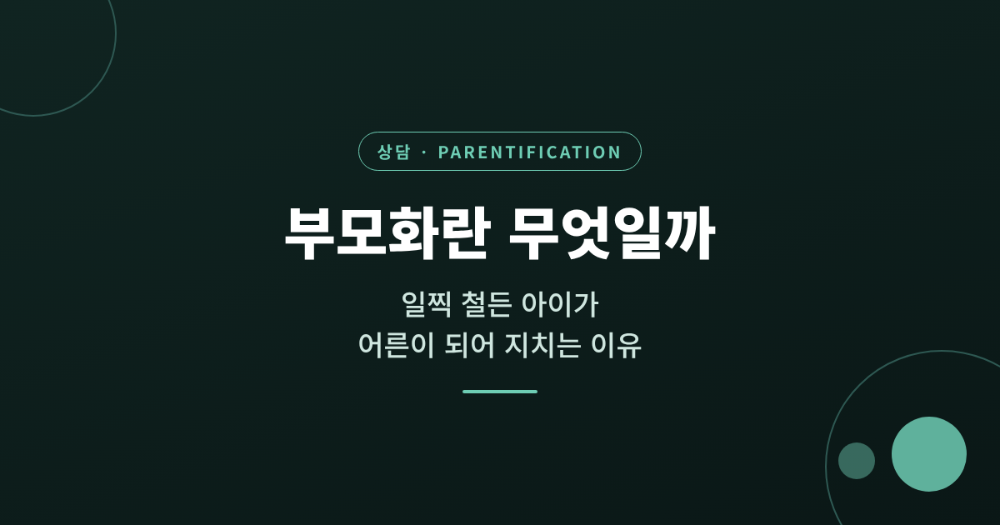
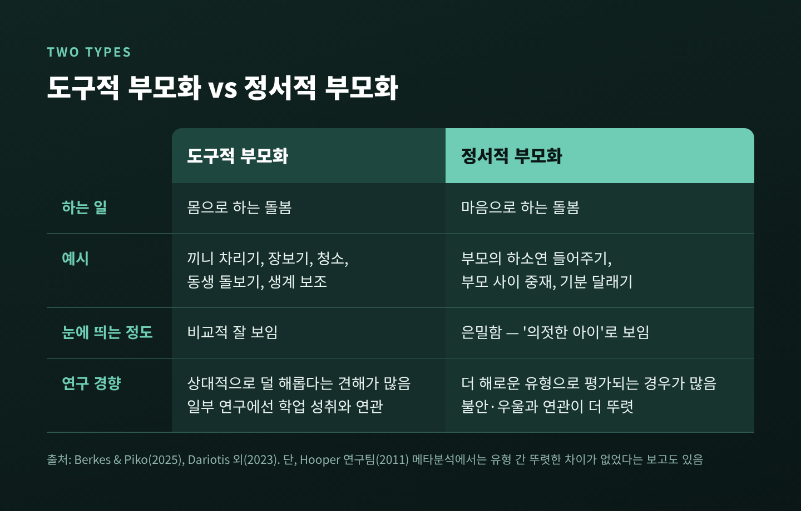
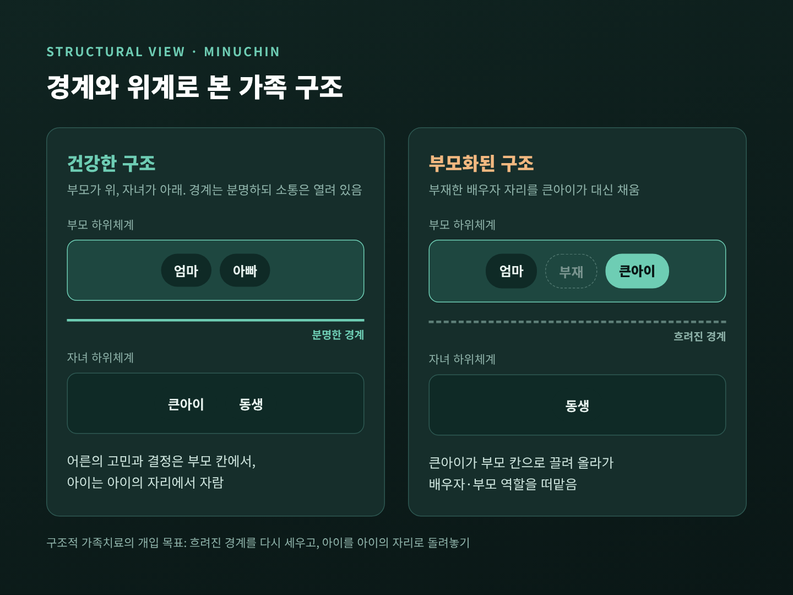
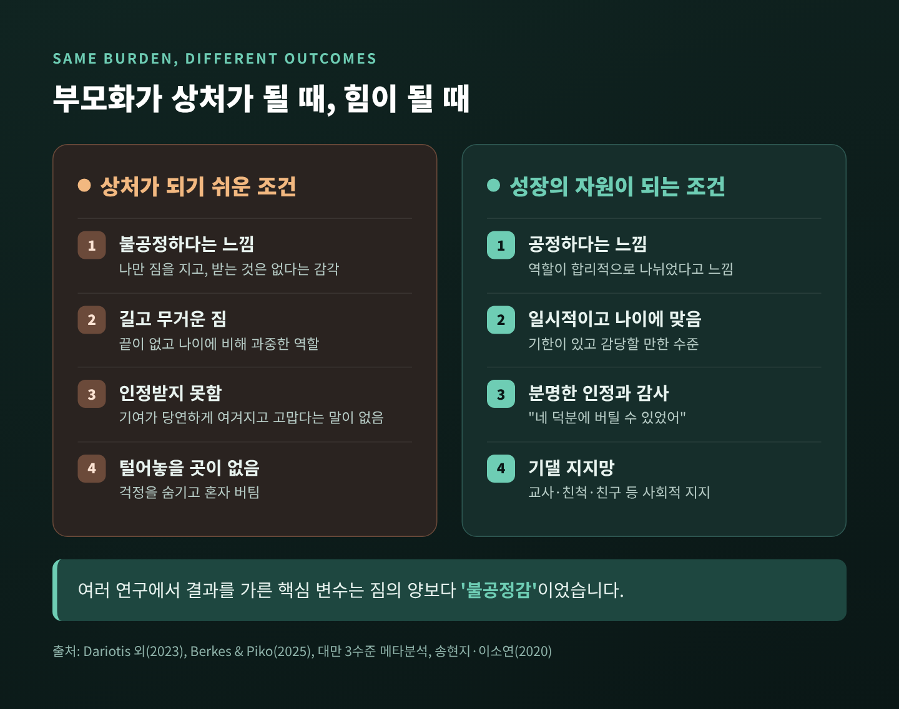
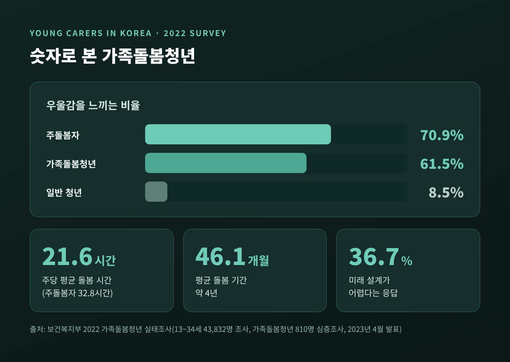
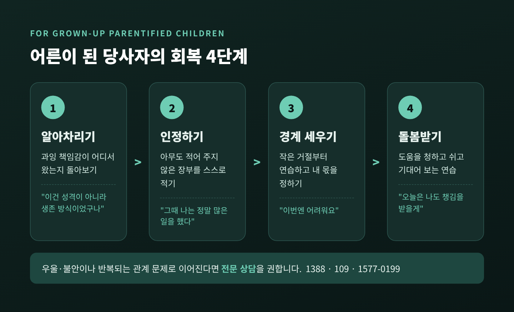

부모화란 무엇일까 — 일찍 철든 아이가 어른이 되어 지치는 이유

오늘은 '부모화(parentification)'라는 가족상담 개념을 정리해 보겠습니다. 어릴 때부터 "속 깊다", "어른스럽다"는 말을 듣고 자란 분들이 어른이 되어 유독 쉽게 지치는 이유를, 가족치료 이론과 연구 결과로 차근차근 살펴봅니다.
세 줄 요약
- 부모화는 아이가 발달 단계에 맞지 않는 부모 역할을 떠맡는 '역할 전도'입니다. 집안일 같은 도구적 부모화와, 부모의 감정을 돌보는 정서적 부모화로 나뉩니다.
- 연구들은 부모화와 성인기 불안·우울 사이에 작지만 의미 있는 연관을 보고합니다. 다만 결과를 가르는 가장 큰 변수는 '불공정하다는 느낌'이었습니다.
- 책임이 일시적이고, 나이에 맞고, 인정과 감사를 받을 때는 오히려 공감 능력과 회복탄력성이 자랄 수 있습니다.
■ 부모화란 무엇인가
부모화는 가족 안에서 부모와 자녀의 역할이 뒤바뀌는 현상입니다. 아이가 돌봄을 받는 대신, 부모나 다른 가족을 돌보는 자리에 서게 됩니다.
이 말은 1967년 미누친(Salvador Minuchin) 연구팀의 저작 『Families of the Slums』에서 처음 쓰인 것으로 소개됩니다. 개념을 체계적으로 다듬은 사람은 맥락적 가족치료를 창시한 보스조르메니-내지(Ivan Boszormenyi-Nagy)입니다. 그는 1973년 동료 스파크(Spark)와 함께 쓴 『보이지 않는 충성심(Invisible Loyalties)』에서 부모화를 이렇게 정의했습니다. "아이가 발달적으로 준비되지 않은 부모 역할을 수행하는 것."
핵심은 '준비되지 않은'이라는 단어에 있습니다. 설거지를 돕는 아이가 모두 부모화된 것은 아닙니다. 그 일이 아이의 나이에 비해 지나치게 무겁고, 쉬거나 공부할 시간을 빼앗을 때 비로소 문제가 됩니다.
■ 정서적 부모화와 도구적 부모화
연구자들은 부모화를 크게 두 갈래로 나눕니다.
도구적 부모화는 몸으로 하는 일입니다. 끼니 차리기, 장보기, 청소, 동생 등하교, 때로는 생계 보조까지 포함됩니다.
정서적 부모화는 마음으로 하는 일입니다. 부모의 하소연을 들어주는 상담자, 다투는 부모 사이의 중재자, 부모의 기분을 살피고 달래는 관리자 역할이 여기에 속합니다.

두 유형 가운데 더 해롭다고 평가받는 쪽은 대체로 정서적 부모화입니다. 2025년 발표된 스코핑 리뷰(Berkes & Piko)는 정서적 부모화를 "더 은밀하고 더 해로운 것으로 여겨진다"고 정리했습니다. 겉으로는 '착하고 의젓한 아이'로만 보이기 때문에 주변 어른이 알아차리기도 어렵습니다.
반대로 도구적 부모화는 상대적으로 덜 해롭다는 견해가 많고, 일부 연구에서는 높은 학업 성취와 연결되기도 했습니다. 다만 후퍼(Lisa Hooper) 연구팀의 2011년 메타분석에서는 부모화의 유형이 결과를 뚜렷하게 가르지 않았다는 보고도 있습니다. 어느 쪽이 더 해로운지는 아직 연구마다 결이 조금씩 다릅니다.
규모를 짐작하게 하는 자료도 있습니다. 폴란드 청소년 4만 7,984명을 조사한 연구에서, 부모를 향한 정서적 부모화가 '매우 높은' 수준인 비율은 35.9%였습니다. 같은 기준의 도구적 부모화는 7.2%에 그쳤습니다. 보이지 않는 짐이 보이는 짐보다 훨씬 흔했던 셈입니다.
■ 두 가족치료 이론이 보는 부모화
미누친 — 경계와 위계가 무너진 구조
구조적 가족치료를 세운 미누친은 가족을 몇 개의 '하위체계'로 봅니다. 부부, 부모, 형제가 각각 하나의 단위입니다. 건강한 가족에서는 부모 하위체계가 자녀 하위체계 위에 있고, 둘 사이에는 분명하되 숨 쉴 틈이 있는 '경계'가 있습니다.
부모화는 이 경계가 흐려진 상태입니다. 구조적 가족치료 문헌은 대표적 역기능으로 "신체적 또는 정서적으로 부재한 배우자를 대신하기 위해 큰아이가 부모 하위체계로 끌려 들어가는 것"을 꼽습니다. 아이는 자녀 칸에서 빠져나와 부모 칸에 앉게 됩니다.

그래서 구조적 가족치료의 개입은 '구조를 다시 세우는 일'에 가깝습니다. 부모끼리 결정할 일은 부모가 나누고, 아이는 다시 아이의 자리로 돌아오게 돕습니다.
보스조르메니-내지 — 보이지 않는 장부와 공정성
내지의 맥락적 가족치료는 조금 다른 곳을 봅니다. 그는 가족 관계의 바탕에 '관계 윤리', 곧 공정성과 신뢰의 균형이 있다고 보았습니다.
가족마다 보이지 않는 '공로 장부'가 있습니다. 누가 누구에게 얼마나 주었고, 무엇을 받을 자격이 있는지가 적히는 장부입니다. 아이가 많이 주었는데 아무도 그 사실을 알아주지 않으면, 장부는 기울어진 채로 남습니다.
이 불균형이 오래되면 '파괴적 권리(destructive entitlement)'가 생길 수 있다고 내지는 설명합니다. "나는 받아야 할 것을 받지 못했다"는 감각이 엉뚱한 사람, 예컨대 훗날의 배우자나 자녀에게 향하는 것입니다.
흥미롭게도 내지는 부모화가 늘 해롭지는 않다고 보았습니다. 돌봄이 일시적이고 적당한 수준이며, 부모가 그 기여를 고마워할 때는 공감과 책임감을 키울 수 있다는 것입니다. 그래서 맥락적 치료의 중요한 도구가 '인정(crediting)', 즉 아이가 한 일을 분명히 알아주는 일입니다. 다만 이 접근은 개념 문헌이 중심이고, 비교집단을 둔 효과 연구는 다른 가족치료보다 적다는 한계도 함께 기억해 둘 만합니다.
■ 어떤 가정에서 일어나기 쉬울까
여러 연구를 묶은 리뷰들은 부모화가 가족이 감당하기 어려운 사건에 압도될 때 잘 생긴다고 정리합니다.
- 부모의 중병이나 장애, 우울증 같은 정신건강 문제
- 형제의 장애나 만성질환
- 부모의 음주 등 물질 사용 문제
- 이혼, 그리고 이혼 이후 한부모가 홀로 버티는 시기
- 경제적 어려움으로 부모가 오래 집을 비우는 경우
- 이주 가정에서 아이가 부모의 통역자 역할을 맡는 경우
뜻밖에도 경제적으로 넉넉한 가정에서도 일어납니다. 부모가 일에 몰두하거나 성취 압박이 클 때, 아이가 부모의 정서적 빈자리를 채우는 방식으로 나타나기 때문입니다.
일반화한 장면을 하나 그려 보겠습니다. 부모가 이혼한 뒤 엄마와 사는 열두 살 맏딸이 있습니다. 엄마는 밤마다 아이에게 아빠에 대한 서운함과 생활비 걱정을 털어놓습니다. 아이는 동생 숙제를 봐 주고, 엄마가 울면 등을 두드립니다. 학교에서는 "참 의젓하다"는 말을 듣습니다. 그런데 정작 자기가 힘든 이야기는 꺼내지 않습니다. 엄마가 더 힘들어질까 봐서입니다.
연구에서도 이런 모습이 반복해서 보고됩니다. 아이들은 부모를 보호하려고 자기 걱정을 숨기고, 가까워지고 싶으면서도 거리를 둡니다. 위키백과 등 개론 자료는 맏이, 특히 맏딸이 가장 위험하다고 서술하며, 형제에게 장애가 있으면 손위 형제의 부담이 커진다고 설명합니다. 또한 부모화가 시작된 나이가 어릴수록 결과가 무거워지는 경향이 있습니다.
연구자들은 부모를 비난하지 말라고 거듭 강조합니다. 부모 대부분은 아이를 부모화하려는 의도가 없습니다. 그만큼 어려운 상황에 놓여 있었을 뿐입니다.
■ 어른이 되어 나타나는 흔적
일찍 철든 아이는 어른이 되어 어떻게 될까요.
후퍼 연구팀의 2011년 메타분석은 1984~2010년의 연구 12편, 약 2,500명의 자료를 모았습니다. 아동기 부모화와 성인기 정신건강 문제 사이에는 '작지만 통계적으로 의미 있는' 연관이 있었습니다. 가장 강한 연관은 섭식장애에서 나타났습니다.
2023년 일리노이대 연구팀(Dariotis 등)은 19개국 95편의 연구를 검토했습니다. 부모화는 불안·우울 같은 내면화 문제와 연결됐고, 특히 정서적 부모화에서 그 경향이 뚜렷했습니다. 질적 연구들은 '잃어버린 어린 시절', 너무 이른 어른 되기, 성인기 친밀한 관계의 어려움을 이야기합니다. 타인에 대한 과도한 책임감이나 신뢰 문제 때문에 깊은 관계를 맺기 어렵고, 같은 패턴을 자기 자녀에게 되풀이할 가능성도 언급됩니다.
상담실에서 흔히 듣는 말로 옮기면 이렇습니다. "부탁을 거절하면 죄책감이 들어요." "연애를 하면 늘 상대를 챙기는 쪽이 돼요." "쉬고 있으면 뭔가 잘못하는 것 같아요." 돌보는 사람의 자리가 너무 익숙해서, 돌봄받는 자리가 오히려 불편한 것입니다.
■ 같은 짐, 다른 결과를 가르는 것
여기서 균형을 잡아야 합니다. 부모화를 겪었다고 모두 상처를 안고 사는 것은 아닙니다.
후퍼 연구팀은 상당수가 지속적인 피해 없이 자랐다며, 부모화를 정신질환의 원인으로 과대평가하지 말라고 경고했습니다. 대만 연구진의 3수준 메타분석(51편, 약 1만 5,600명)도 부모화와 정신건강 문제 사이의 연관이 '약하다'고 보고했습니다. 같은 분석에서 동양 문화권 연구의 연관은 서양보다 더 약했습니다.
그렇다면 무엇이 결과를 가를까요. 여러 연구가 같은 곳을 가리킵니다. 바로 '불공정하다는 느낌'입니다.
- 대만 메타분석에서 연관은 지각된 불공정성이 클 때 더 강했습니다.
- 대학생 783명을 조사한 2011년 연구에서는 불공정감이 부모화와 정신건강 증상을 잇는 다리 역할을 했습니다.
- 국내 고등학생 203명을 다섯 유형으로 나눈 연구(송현지·이소연, 2020)에서도 '불공평'이 함께 묶인 집단의 우울이 유의하게 높았습니다. 같은 일을 했어도 불공평감이 없는 집단은 정서적·사회적 안녕감이 더 높았습니다.

Dariotis 연구팀은 회복탄력성과 성장의 사례도 함께 보고했습니다. 아이들은 가족에 보탬이 된 경험에서 공감, 주체성, 자존감을 이야기했습니다. 노력을 인정받았는지, 역할이 공정하다고 느꼈는지, 기댈 지지망이 있었는지가 아이가 허우적댈지, 버텨낼지, 오히려 자랄지를 갈랐습니다. 2025년 리뷰도 돌봄이 "일시적이고, 나이에 맞으며, 분명히 인정받고 감사받을 때" 회복탄력성과 유능감이 자랄 수 있다고 정리합니다.
예전에는 부모화를 '피해야 할 병리'로만 보았습니다. 지금은 '어떤 조건에서 짐이 되고, 어떤 조건에서 힘이 되는가'를 묻는 쪽으로 연구의 무게가 옮겨 가고 있습니다.
■ 영케어러, 한국의 가족돌봄청년
부모화가 가장 눈에 보이는 형태로 드러나는 집단이 '영케어러(young carer)', 우리말로 가족돌봄청년입니다. 아프거나 장애가 있는 가족을 돌보는 아동·청년을 말합니다.
보건복지부가 2023년 4월 발표한 2022년 가족돌봄청년 실태조사는 이들의 무게를 숫자로 보여 줍니다. 13~34세 4만 3,832명을 조사하고, 가족돌봄청년 810명을 깊이 살폈습니다.
- 주당 평균 돌봄 시간 21.6시간, 주로 돌보는 사람은 32.8시간
- 평균 돌봄 기간 46.1개월, 약 4년
- 돌봄 대상은 할머니(39.1%), 형제(25.5%), 어머니(24.3%) 순
- 우울감 비율 61.5%, 일반 청년(8.5%)의 7배가 넘는 수준
- 미래 설계가 어렵다는 응답 36.7%

제도도 생겼습니다. 2025년 3월 「가족돌봄 등 위기아동·청년 지원에 관한 법률」이 제정되어 2026년 3월 26일부터 시행 중입니다. 34세 이하가 대상이고, 13세 미만 가족돌봄아동은 드림스타트, 13~34세 가족돌봄청년은 '청년미래센터'가 맡는 구조입니다. 사례관리, 심리상담, 건강관리, 교육·취업, 주거 지원이 법에 담겼습니다.
눈에 띄는 것은 '자기돌봄비'입니다. 기준 중위소득 100% 이하인 13~34세 가족돌봄청년에게 200만 원을 지원해, 자기계발·건강관리·심리 회복에 쓰도록 합니다. 2026년 10월에는 서울과 강원에서도 신청이 시작됐다는 소식이 이어졌습니다. 다만 지역마다 신청 시기와 인원이 다르고, 전국 몇 곳의 청년미래센터가 운영 중인지는 이 글을 쓰는 시점에 확인하지 못했습니다. 거주지 지자체나 복지부 '청년ON' 누리집에서 직접 확인하시길 권합니다.
한계를 지적하는 목소리도 있습니다. 돌봄 대상과 같은 주소에 살아야 하고, 35세 이상 가족이 함께 살면 원칙적으로 제외되는 등 요건이 좁다는 비판입니다. 학교나 의료기관의 연계가 '의무'가 아닌 '권고'에 그쳐 숨은 아이들을 찾아내기 어렵다는 지적도 나옵니다. 법은 생겼지만, 아직 첫걸음입니다.
■ 부모와 교사가 할 수 있는 일
부모화를 완전히 피할 수 없는 가정도 많습니다. 누군가 아프고, 생계가 급한 현실은 바뀌지 않기 때문입니다. 그래서 목표는 '아이에게 아무 일도 시키지 않기'가 아니라, 짐을 공정하고 견딜 만하게 만드는 것입니다.
부모라면
- 고마움을 말로 표현합니다. "네가 동생을 봐 줘서 엄마가 일을 할 수 있었어. 정말 고마워." 내지가 말한 '인정'이 바로 이것입니다.
- 어른의 고민은 어른에게 털어놓습니다. 배우자 문제, 돈 걱정은 친구나 상담자와 나눕니다. 아이는 부모의 상담자가 아닙니다.
- 아이에게 아이의 시간을 돌려줍니다. 친구를 만나고, 놀고, 아무것도 하지 않을 시간을 일정에 넣습니다.
- 역할에 끝을 정합니다. "할머니 퇴원하실 때까지만 부탁할게."처럼 기한이 있는 부탁은 무게가 다릅니다.
교사라면
- 늘 피곤해 보이거나, 지각·결석이 잦거나, 갑자기 위축되는 학생을 눈여겨봅니다. 2025년 리뷰도 교사와 상담자가 이런 신호를 알아차리도록 훈련받아야 한다고 권합니다.
- "요즘 집에서 맡은 일이 많니?" 같은 가벼운 질문으로 문을 열어 둡니다.
- 지역 청소년상담복지센터나 청년미래센터 같은 지원 기관으로 연결합니다.
연구들은 걱정을 털어놓을 수 있는 것, 그리고 주변의 사회적 지지가 아이를 지키는 힘이 된다고 말합니다. 아이가 "나도 힘들어"라고 말할 수 있는 어른이 한 명만 있어도 결과는 달라집니다.
■ 어른이 된 당사자를 위한 회복의 방향
이미 어른이 된 분들에게는 조금 다른 이야기가 필요합니다.

첫째, 알아차리기. '원래 내 성격'이라고 여겼던 과잉 책임감이 어디서 왔는지 돌아봅니다. 그 성실함은 결함이 아니라, 어린 시절 가족을 지키기 위해 익힌 생존 방식이었을 수 있습니다.
둘째, 스스로 인정하기. 누구도 장부에 적어 주지 않았다면, 이제 스스로 적어 주어도 됩니다. "그때 나는 정말 많은 일을 했다." 이 문장을 소리 내어 말해 보는 것만으로도 기울어진 장부가 조금 바로 섭니다.
셋째, 경계 세우기. 모든 부탁을 들어주지 않아도 관계는 무너지지 않습니다. 작은 거절부터 연습합니다. 원가족과의 관계에서도 '할 수 있는 만큼'을 정해 두면 죄책감이 줄어듭니다.
넷째, 돌봄받는 연습. 도움을 청하고, 쉬고, 챙김을 받는 일은 의외로 연습이 필요합니다. 연인이나 친구 관계에서 늘 돌보는 쪽에 서 있다면, 한 번쯤 기대어 보는 경험이 회복의 출발점이 됩니다.
부모화의 흔적이 우울, 불안, 반복되는 관계 문제로 이어지고 있다면 전문 상담을 권합니다. 연구자들도 부모화와 심리적 어려움이 분명히 연결된 경우에는 가족치료 등 전문적인 작업을 제안합니다.
끝으로 한 가지만 덧붙이겠습니다.
일찍 철든 아이는 칭찬을 많이 들었지만, 고맙다는 말은 드물게 들었을지 모릅니다. 연구가 말해 주는 것은 분명합니다. 짐의 무게만큼이나, 그 짐이 공정하게 인정받았는지가 중요합니다.
"너무 일찍 어른이 되어야 했던 아이에게 필요한 것은 더 많은 칭찬이 아니라, 늦게라도 건네는 인정입니다."
그 아이가 지금의 나라면, 오늘은 스스로에게 먼저 그 말을 건네도 괜찮습니다.
혼자 감당하기 어렵다면 이곳에 연락해 주세요
- 청소년상담 1388: 365일 24시간, 무료. 전화(휴대전화는 지역번호+1388), 문자 1388, 카카오톡 '청소년상담1388', 누리집 www.1388.go.kr. 만 9~24세 청소년과 보호자 이용.
- 자살예방상담전화 109: 24시간. 극단적인 생각이 들 때 바로 전화하실 수 있습니다.
- 정신건강 위기상담전화 1577-0199: 24시간. 우울, 불안 등 정신건강 상담.
- 가족돌봄청년 지원: 거주지 청년미래센터 또는 복지부 '청년ON' 누리집에서 사례관리·자기돌봄비 안내를 받을 수 있습니다.
※ 이 글의 사례는 이해를 돕기 위해 일반화한 것으로, 특정 인물과 관련이 없습니다. 이 글은 정보 제공용이며 전문적인 진단이나 상담을 대신하지 않습니다.
참고 자료
- Dariotis, J. K. 외 (2023). Parentification Vulnerability, Reactivity, Resilience, and Thriving. IJERPH 20(13) — doi.org/10.3390/ijerph20136197
- Berkes, I. & Piko, B. (2025). A Double-Edged Sword: A Scoping Review of the Mental Health Aspects of Parentification. IJMHP 27(11) — techscience.com
- Deutsches Ärzteblatt (2012). Hooper 연구팀 2011 메타분석 소개 — aerzteblatt.de
- 張晨光 외, 부모화와 정신건강 결과의 3수준 메타분석 — ericdata.com
- 송현지·이소연 (2020). 청소년의 부모화 군집에 따른 우울 증상, 안녕감의 차이. 『청소년상담연구』 28(1) — scholar.kyobobook.co.kr
- 서울신문 (2023.4.26). 2022 가족돌봄청년 실태조사 — seoul.co.kr
- 경기일보 (2026.3.17). 위기아동청년법 시행령 — kyeonggi.com
- 더팩트 (2026.3.25). 가족돌봄·고립 아동·청년 지원 강화 — tf.co.kr
- 참여연대 월간복지동향 (2026.5.10) — peoplepower21.org
- 서울시 미디어허브 (2026.10.2). 자기돌봄비 200만 원 — mediahub.seoul.go.kr
#부모화 #정서적부모화 #가족치료 #영케어러 #가족돌봄청년 #자기돌봄비 #맏이 #가족상담 #심리상담